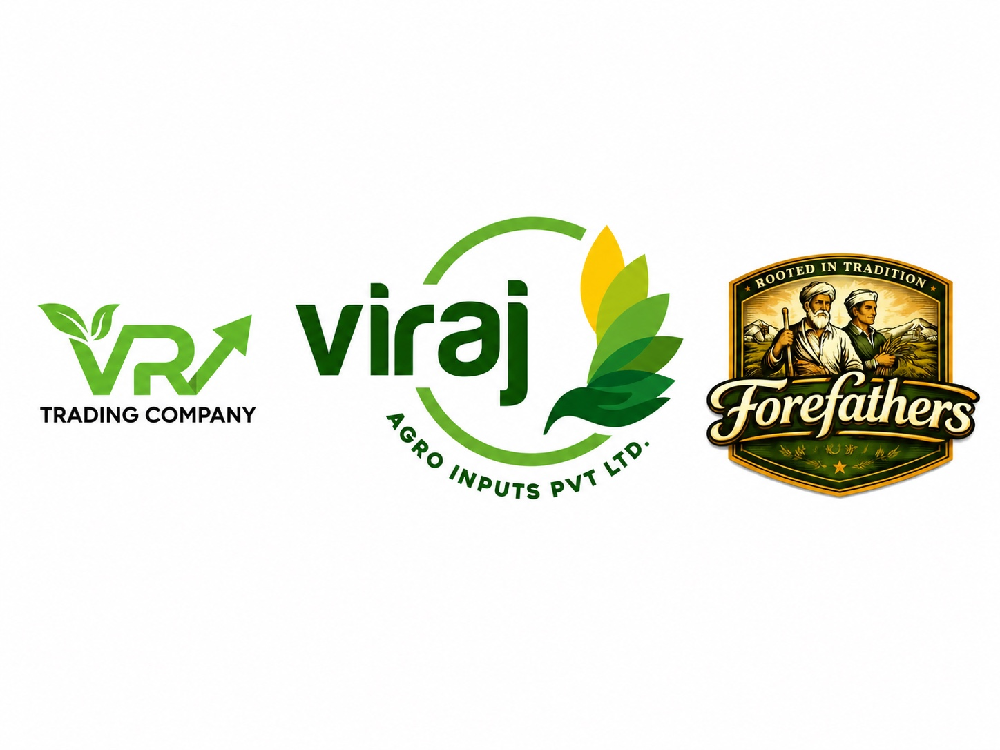

🌱
Agricultural Inputs
Supporting farmers and agribusinesses with high-quality seeds, crop nutrition, protection, mechanization, and expert advisory.
About Viraj Holdings
Resilient. Scalable. Globally Competitive.
Viraj Holdings is a diversified business group focused on building integrated enterprises across agriculture, food, commodities, manufacturing, and international trade. We believe that sustainable growth is created by connecting industries, strengthening supply chains, and delivering value at every stage of the business ecosystem.
Founded with a vision to create businesses that are resilient, scalable, and globally competitive, Viraj Holdings brings together multiple ventures under one unified purpose—to serve markets with quality, reliability, and long-term commitment.

Our Foundation
Our foundation lies in agriculture through Viraj Agro Inputs Pvt. Ltd., where we work to support farmers with dependable agricultural input solutions. Building on this foundation, we are expanding into commodity trading, milling, FMCG, and export–import operations, creating an ecosystem where every business complements the next.
Rather than operating as independent ventures, our businesses are designed to work together. From agricultural inputs that support production, to commodity procurement, value-added processing, consumer products, and global exports, we are developing an integrated value chain that creates efficiency, consistency, and lasting partnerships.
Our History & Evolution
Over three decades of empowering farmers, strengthening industries, and connecting global markets.
"Every great enterprise begins with a simple purpose. Ours began in the early 1990s, with a commitment to serve the people who feed the nation — our farmers."
Founded by Shri. Rajashekar Reddy Kothakapu
Driven by a passion for agriculture and an unwavering belief in building lasting relationships, Shri. Rajashekar Reddy Kothakapu laid the foundation of our journey by establishing Vamshi Teja Traders and Teja Traders. What started as a trusted agricultural input business soon supplied thousands of farmers across Andhra Pradesh, Telangana, and Karnataka with quality seeds, fertilizers, crop protection products, and trading a wide range of agricultural commodities including grains, pulses, and cotton.
As the agricultural landscape evolved, so did our vision. Recognizing the growing need for post-harvest infrastructure and value addition, we expanded into the Seed Processing and Warehousing industry in 2009, strengthening our ability to preserve quality and support the agricultural supply chain beyond cultivation.
In 2010, we started a Seed Production Program with a buyback guarantee, partnering with leading multinational companies in the agricultural sector. By supplying quality agricultural inputs on credit and assuring market access for farmers' produce, we deepened trust across farming communities.
Our commitment to value creation continued in 2017 with the establishment of Vamshi Teja Industries, a modern cotton ginning facility dedicated to producing high-quality cotton while strengthening market opportunities for cotton growers.
Building on this success, we further expanded in 2021 by establishing another state-of-the-art Cotton Ginning Mill, Seed Processing Plant, and modern Warehousing Infrastructure. These investments enabled us to enhance processing efficiency, improve storage capabilities, maintain product quality, and support the growing demands of the agricultural sector.
Joined by Vamshidhar Reddy Kothakapu
In 2023, Vamshidhar Reddy Kothakapu joined hands with his father to build the next chapter of our journey. Together, they founded Viraj Agro Inputs Private Limited with a vision to transform decades of agricultural experience into an integrated enterprise capable of serving both domestic and international markets as a complete agricultural ecosystem.
Today, our work begins long before a seed is sown with quality seeds, nutrition, protection, farm mechanization, and technical guidance. As crops mature, we support farmers through responsible procurement and market linkages. Beyond the farm, our facilities transform produce through seed processing, cotton ginning, cleaning, grading, and storage. Our commodity trading operations connect producers, processors, manufacturers, exporters, and retailers. Through international trade (EXIM), we bring Indian agricultural products to global markets. Expanding into FMCG, we deliver authentic consumer products combining quality and nutrition without compromise.
Synergy in Action
Our businesses work in harmony to create efficiency, consistency, and sustainable value across the ecosystem.
Supporting farmers and agribusinesses with high-quality seeds, crop nutrition, protection, mechanization, and expert advisory.
Direct sourcing from farmers, FPOs, and aggregators with strict quality assessment and transparent supply channels.
Transforming raw produce into market-ready commodities through modern seed processing, cotton ginning, and milling infrastructure.
Delivering quality packaged goods to consumers backed by integrated manufacturing and strong distribution reach.
Connecting domestic agricultural strength with international markets through end-to-end trade coordination and compliance.
Our Philosophy
At the heart of Viraj Holdings is a simple philosophy: businesses should create value not only for customers, but also for farmers, suppliers, employees, business partners, and the communities they serve.
We believe that trust is earned through transparency, integrity, and open, honest relationships across every business unit.
Quality is built through operational discipline, rigorous standards, and relentless attention to detail in everything we do.
Growth is sustained through continuous innovation, adaptability, and responsible, forward-thinking decision-making.
Our Ambition & Vision
As global markets evolve and industries become increasingly interconnected, our ambition is to build a business group that is recognized for operational excellence, ethical leadership, and the ability to transform opportunities into sustainable enterprises.
Viraj Holdings is more than a collection of businesses. It is a long-term vision to build an organization that connects agriculture with industry, local expertise with global markets, and today's opportunities with tomorrow's possibilities.
Partner With Us
Whether you are looking to collaborate, invest, or connect with our business ecosystem, we’d love to hear from you.